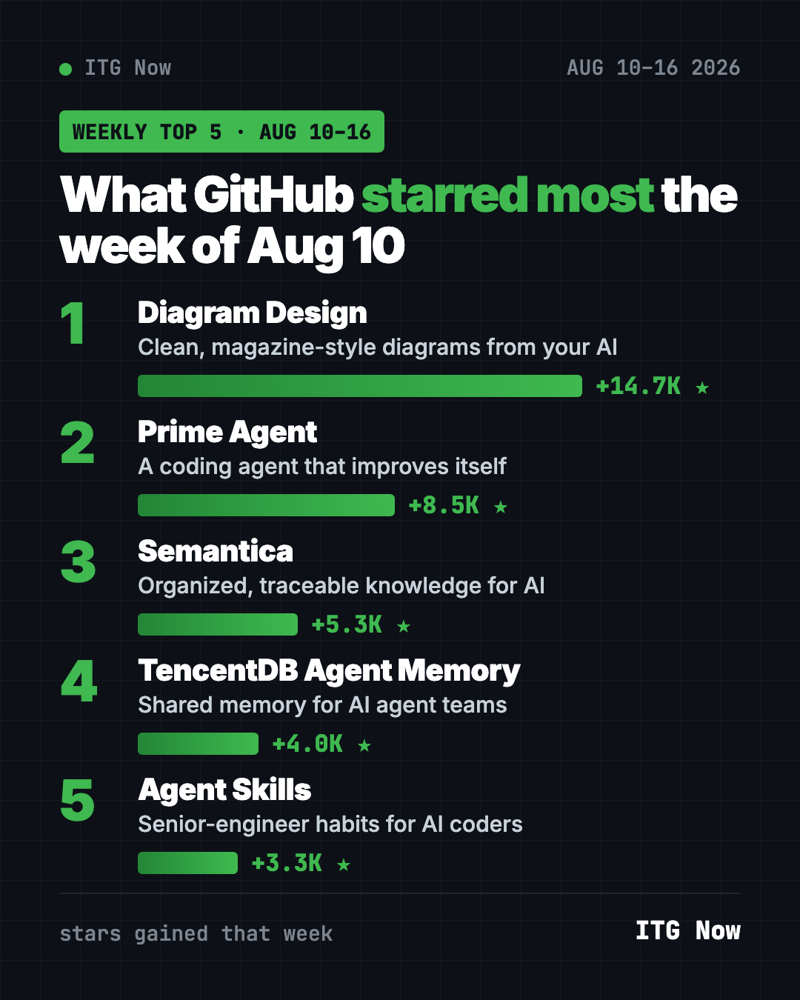
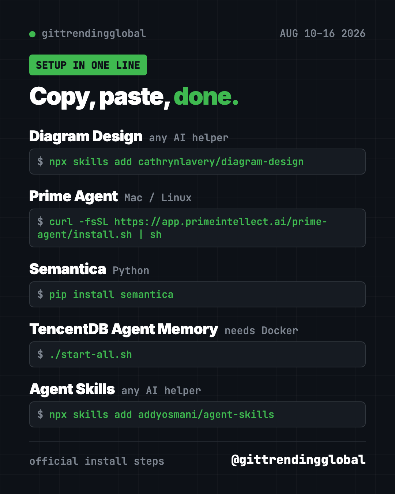

Home › Top repos › GitHub trending this week
GitHub Trending August 10, 2026: The Week's 5 Top Repos
GitHub trending August 10 2026: Diagram Design, Prime Agent, Semantica, TencentDB Agent Memory and Agent Skills, with install steps in plain English.
For the GitHub trending August 10 2026 week, the clear winner was Diagram Design, a skill that makes your AI draw clean, magazine-style diagrams. It gained +14.7K stars, almost double the runner-up.
This was a week of upgrades for AI helpers. Four of the five repos make tools like Claude Code or Codex smarter, tidier or better at remembering. Here's each one in plain words, with the command to try it.
Key takeaways
- Diagram Design won the week (Aug 10 to 16) with +14.7K stars. It turns a plain request into a polished diagram.
- Prime Agent is an AI coding agent that can review its own work and improve how it operates.
- Agent Skills from Addy Osmani packs senior-engineer habits into 25 skills.
- TencentDB Agent Memory stayed on the chart for a second week.

GitHub trending August 10 2026: the top 5 compared
| Repo | What it does | Best for | Free? | Setup |
|---|---|---|---|---|
| Diagram Design | Makes your AI draw clean diagrams | Anyone who explains ideas | Yes (MIT) | One command |
| Prime Agent | Coding agent that improves itself | Developers with long tasks | Yes (MIT) | One command |
| Semantica | Builds a traceable map of your data for AI | Data and compliance teams | Yes (MIT) | Python |
| TencentDB Agent Memory | Shared memory for AI agent teams | Teams using AI helpers | Yes (MIT) | Docker |
| Agent Skills | 25 good-habit skills for AI coders | Anyone coding with AI | Yes (MIT) | One command |
Star gains cover Aug 10 to 16, 2026. Totals were checked on GitHub on October 16, 2026.
1. Diagram Design: diagrams that look like a magazine made them
Stars: +14.7K this week · about 55.8K total
What it is: A "skill," which is a set of instructions you add to an AI helper. This one teaches Claude Code, Codex, Copilot, Cursor and others to draw editorial-style diagrams. The README lists 44 diagram types. Each one comes out as a single web file you can open anywhere.
Who it's for: Teachers, founders, managers and anyone who explains how things work.
Everyday use: "Draw how a customer order moves from our website to the warehouse." You get a clean chart for your slides.
Install it: You need Node.js, a free program many tools run on. Copy and paste this:
npx skills add cathrynlavery/diagram-design
Let Claude or Codex do it:
Install Diagram Design from github.com/cathrynlavery/diagram-design, then draw a simple 3-step diagram of how I make my morning coffee.
Want the full walkthrough? Read our Diagram Design guide.
2. Prime Agent: a coding agent that learns how to work better
Stars: +8.5K this week · about 22.0K total
What it is: An open-source agent from Prime Intellect for coding and research tasks that run for a long time. It can split work across helper agents. It keeps running if you close the terminal. A /refine command reviews what it just did and makes small, evidence-backed updates to its own notes and skills.
Who it's for: Developers who hand AI big jobs, like "refactor this whole app."
Everyday use: Start a long cleanup job, close the terminal window, and reconnect later to see the results.
Install it: On Mac or Linux, copy and paste this:
curl -fsSL https://app.primeintellect.ai/prime-agent/install.sh | sh
On Windows, the README gives a PowerShell line instead.
Let Claude or Codex do it:
Install Prime Agent from github.com/PrimeIntellect-ai/prime-agent and explain how to start my first task with it.
3. Semantica: AI answers you can trace back
Stars: +5.3K this week · about 14.1K total
What it is: A Python toolkit that turns messy company data into a knowledge graph. That's a map of facts and how they connect. Your AI then works from that map, and you can see why it gave each answer.
Who it's for: Data teams in banks, hospitals, law firms and other places where someone may ask, "Why did the AI do that?"
Everyday use: Load a folder of contracts and find which clauses connect to which suppliers.
Install it: Copy and paste this:
pip install semantica
Let Claude or Codex do it:
Install Semantica from github.com/semantica-agi/semantica and build a small knowledge graph from the PDFs in my contracts folder.

4. TencentDB Agent Memory: still climbing
Stars: +4.0K this week · about 29.2K total
What it is: Tencent Cloud's shared memory hub for AI agents. It saves chats, docs and code so every helper on a team can reuse them. It was number two the week before.
Who it's for: Teams with several people coding with AI on one project.
Everyday use: A new teammate's AI already knows your project's rules on day one.
Install it: You need Docker. After you fill in the .env settings file, the README's last step is:
./start-all.sh
Let Claude or Codex do it:
Set up TencentDB Agent Memory from github.com/TencentCloud/TencentDB-Agent-Memory following its README, and ask me for each setting.
See TencentDB Agent Memory on GitHub
5. Agent Skills: senior-engineer habits for your AI
Stars: +3.3K this week · about 107K total
What it is: Addy Osmani's pack of 25 skills and 9 slash commands. They walk your AI through the steps good engineers follow: write a spec, plan, build, test, review, ship.
Who it's for: Anyone whose AI helper writes code fast but skips the boring checks.
Everyday use: Type /spec before a new feature, so your AI asks the right questions before it writes a single line.
Install it: Copy and paste this:
npx skills add addyosmani/agent-skills
Let Claude or Codex do it:
Install Agent Skills from github.com/addyosmani/agent-skills and show me how to use /spec and /plan on my next feature.
💡 Tip: Skills don't change your AI's brain. They're instruction files it reads when the task fits. You can remove them any time.
Which one should you try first?
- You explain things to people: start with Diagram Design. It's the most fun here.
- You code with AI and want fewer mistakes: add Agent Skills.
- You give AI long, big jobs: try Prime Agent.
- You work with sensitive business data: look at Semantica.
⚠️ Heads up: Skills and agents use your AI plan when they run. Long jobs can burn through credits, so start small.
See the month's winners in our top 5 GitHub repos of August 2026, the news in August 2026 in AI, or move on to the next week.
FAQ
What topped GitHub trending August 10 2026?
Diagram Design, with +14.7K stars. Prime Agent was second with +8.5K.
What is an AI "skill"?
It's a file of instructions an AI helper like Claude Code or Codex reads when a task fits. It teaches the AI a specific job, like drawing diagrams.
Do I need to code to use Diagram Design?
No. You install it once, then ask for diagrams in plain words.
Are these tools free?
Yes, all five are free and open source. The AI model you connect them to may cost money.
Want one new free tool explained every day? Follow @gittrendingglobal on Instagram.
Keep reading

Trending GitHub Repos October 2026: The Top 5 So Far
The trending GitHub repos of October 2026 so far: a free Photoshop-style editor, an AI art studio, a big AI model for gaming PCs and more, explained.

Trending GitHub Repos This Week, Oct 5 2026: The Top 5
Trending GitHub repos this week Oct 5 2026: Matt Pocock's skills, the openGym workout tracker, e2e testing, HyperFrames video and claude-mem memory.

GitHub Trending September 28, 2026: Hindsight and Paperclip
GitHub trending September 28 2026: Hindsight, Paperclip, NVIDIA's OpenShell and a free 542-lesson AI course, with setup steps for each.